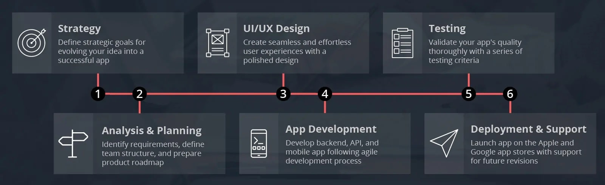
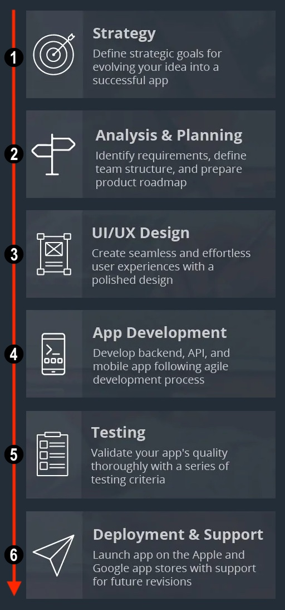

About Me
Let me tell you a few things...
BIO
 Greetings!
I'm Sebastian, a seasoned Senior iOS Developer with a passion for crafting exceptional mobile experiences. With a strong foundation in iOS app development, I bring a wealth of expertise to the table, ready to assist you throughout the entire application development journey. I value continuous skill enhancement and broad knowledge exchange. My approach is holistic, covering all stages of the development process to ensure your project's success:
- Strategy
I begin by diving deep into your project's goals, helping you define a clear and effective strategy to achieve them. - Analysis and Planning
Meticulous analysis and detailed planning are at the core of my process, ensuring that your app meets your precise requirements. - UI/UX Design
Crafting user-friendly and visually appealing interfaces is a personal commitment. I'm dedicated to creating designs that not only meet but exceed expectations. - App Development
Whether you prefer UIKit or SwiftUI, I have proficiency in both. My development expertise extends to following industry-standard architectural patterns like MVC and MVVM. The use of SOLID principles in my projects supports a design architecture that promotes code reuse and a high level of system integrity, which are crucial for the long-term sustainability of applications.- Single Responsibility Principle – class/module should only be responsible for one thing, and not have multiple responsibilities.
- Open-Closed Principle – classes/modules - should be open for extension, but closed for modification.
- Liskov Substitution Principle – Derived or child classes must be substitutable for their base or parent classes.
- Interface Segregation Principle – Classes should have specific interfaces for the functionality they provide.
- Dependency Inversion Principle – high-level modules should not depend on low-level modules, but should depend on abstraction.
- Testing
Rigorous testing is essential for a bug-free experience. I meticulously test many aspects of the app to guarantee its reliability. - Deployment and Support
From launching your app on the App Store to providing ongoing support, I'm here to ensure your app's success in the long run. I am deeply committed to the principles of Continuous Integration (CI) and Continuous Delivery (CD), ensuring that software updates are released smoothly and efficiently. My workflow integrates powerful tools like Fastlane and Bitrise, which streamline the development process. Fastlane automates tedious tasks such as code signing, and releasing applications, thereby simplifying the deployment to the App Store and TestFlight. This automation not only ensures consistency in our builds but also significantly reduces the time and effort involved in preparing app submissions. With Bitrise, an integral part of my CI/CD pipeline, I automate workflows tailored for iOS projects. From building and testing to deploying directly to TestFlight for beta testing or to the App Store for production releases, Bitrise enhances our productivity and reliability without the overhead of managing hardware and complex configurations.
I take pride in my adherence to Apple's Human Interface Guidelines, ensuring that your app not only functions flawlessly but also aligns with Apple's design principles. Proficient in Objective-C and Swift, I have the versatility to work within international teams, making collaboration seamless. My commitment to excellence goes beyond the stated roles, and I'm always eager to explore and adapt to new challenges. My technical journey has also allowed me to explore and gain a foundational understanding of several other key areas in the technology landscape:
- Cross-Platform Development
Familiarity with Kotlin and Android Studio has enabled me to appreciate the nuances of Android development and the possibilities of cross-platform applications like KMM. - Web Development
While primarily an iOS developer, I've dipped my toes into web development, exploring the basics of HTML, CSS, JavaScript, along with introductory work in Vue.js and Angular. This has given me a broader perspective on creating user-centric digital experiences. - Backend Development
I have a growing interest in backend technologies and have begun learning about building scalable applications with Spring Boot Java and Ruby on Rails. My achievement of the AWS Cloud Practitioner Certificate marks the beginning of my journey into understanding cloud infrastructure and its pivotal role in modern software solutions. - Game Development
A foray into game development through Unity has allowed me to create microgames, providing a unique perspective on user engagement and the power of interactive experiences. - Design
Recognizing the importance of design in tech, I've familiarized myself with tools like Figma and Sketch to better understand the design process and its impact on user experience.
Eager to learn and grow, I aim to use my broadening skills not just in software development but in driving your company's success. My membership in Mensa provides access to a global community of highly intelligent individuals from diverse fields, inspiring me to pursue innovative solutions and aiding in a deeper understanding of user needs in the rapidly evolving tech industry. Furthermore, it enriches our recruitment, connecting us to a network of top-tier talent for innovation-driven projects. If you're seeking a Senior iOS Developer who is dedicated to transforming your app idea into a reality, I'm here to make it happen. Let's embark on this exciting journey together!
Feel free to explore my portfolio to witness some of my previous works and get in touch to discuss how I can contribute to your next project.